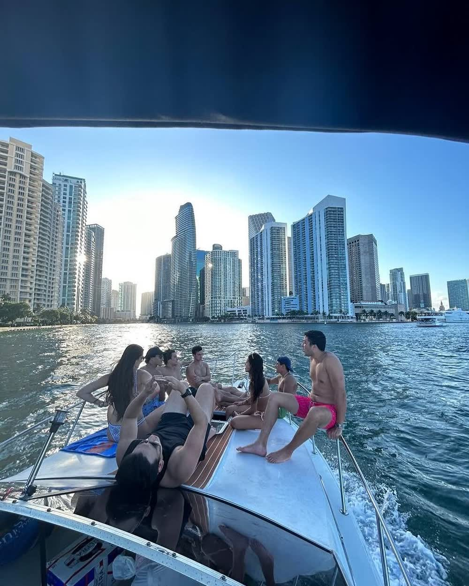
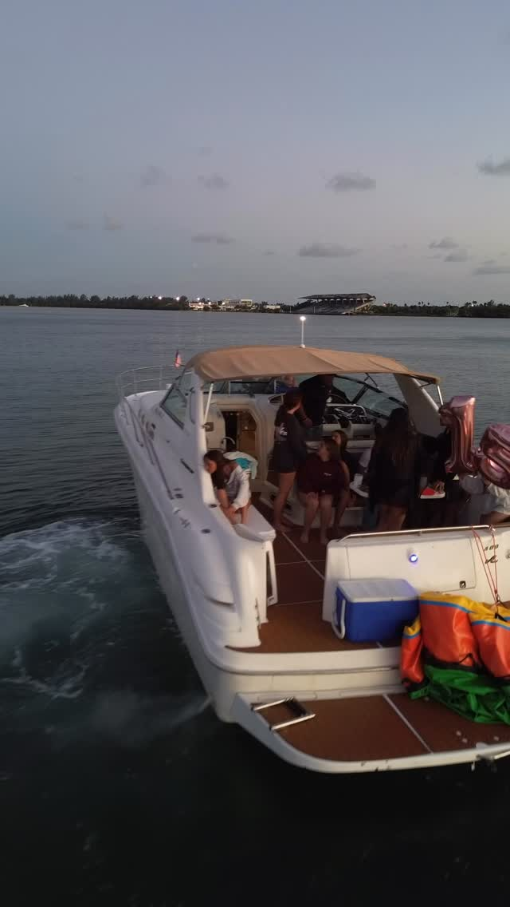

La diferencia entre una foto y LA foto es la hora
Star Island, las casas frente al agua y la línea del downtown — en una ruta armada según dónde cae la luz de verdad.

La luz sobre la ciudad, no detrás
El skyline del downtown mira más o menos al oeste cruzando la bahía, lo que significa que casi todo el día estás disparando contra tu propia luz. La tarde es cuando el sol gira y cae sobre los edificios en vez de detrás, y esa ventana es corta.
Armamos la ruta hacia atrás desde ahí. Primero Star Island y las casas frente al agua, con el sol todavía alto y de lado, y después la bahía abierta para el skyline mientras baja la luz.

Trae fotógrafo, o no
Muchos de estos paseos salen con fotógrafo contratado o con un equipo de contenido, y el bote se trata como un set — mantenemos posición, apagamos el motor, nos recolocamos para el ángulo, y lo repetimos si la primera pasada no salió.
Otros tantos salen solo con el grupo y un teléfono. Las dos cosas son normales. Lo único que cambia es cuánto rato nos quedamos quietos, así que dinos cuál al reservar.

Qué se ve bien de verdad desde el agua
Star Island y las casas de la isla, las terminales de cruceros cuando hay barco, los puentes, y la pared de torres del downtown desde agua abierta. En una tarde despejada las luces de la ciudad se encienden cuando todavía queda color en el cielo, y esos quince minutos son lo mejor.
Lo que no funciona es el mediodía con sol plano encima y el skyline en bruma. Te lo decimos cuando pides ese horario, en vez de tomar la reserva y dejar que lo descubras tú.
Preguntas sobre fotos y skyline
¿Cuál es la mejor hora para fotos con el skyline?
La tarde, entrando en el atardecer. Las torres del downtown miran al oeste cruzando la bahía, así que más temprano estás disparando contra la luz. La última hora antes de la puesta, y los quince minutos después cuando se encienden las luces, son las dos mejores ventanas.
¿Podemos llevar fotógrafo o dron?
Fotógrafo sí — es común, y el capitán mantiene posición y se recoloca para los ángulos. El dron es otra cosa: partes de la bahía de Biscayne quedan bajo espacio aéreo restringido cerca del aeropuerto y el puerto, así que pregunta antes de contar con uno.
¿Pasan por Star Island?
Sí, es parte de la ruta normal. Pasamos por la isla y las casas frente al agua, y después salimos a agua abierta para el skyline. No se puede bajar en propiedad privada, pero todo el recorrido se fotografía desde el bote.
¿Sirve para una propuesta de matrimonio?
Es la más común que hacemos después de los cumpleaños. Dilo bajito al reservar y apagamos el motor en el momento que quieras, nos quitamos del cuadro, y tomamos las fotos después si las quieres.
Dinos qué vas a fotografiar
Una sesión de contenido, un retrato familiar y una propuesta necesitan tres rutas distintas. Dinos cuál y armamos el día alrededor de eso.
Otras celebraciones
Despedida de soltera en bote
Hasta 13, el día entero en fotos, y la novia sin organizar nada.
Cumpleaños en bote
El bizcocho en frío, tu playlist, y el motor apagado con el downtown detrás.
Paseo al atardecer
Cuarenta minutos buenos, calculados hacia atrás desde el sol. El paseo más corto.
Día en el banco de arena
Agua a la cintura, arena blanca debajo, y la piscina flotante afuera.
Paseo en familia
Sombra todo el día, chalecos de niño de serie, y nadie con prisa.
Eventos corporativos en el mar
Hasta 13, reservado con el capitán, con factura, y sin agencia de eventos en el medio.
Noches románticas en el mar
El bote entero para dos, la mesa de la bañera, y un capitán que no sale en las fotos.
Esparcir cenizas en el mar
Un bote privado más allá de las tres millas, y todo el tiempo que necesites con el motor apagado.